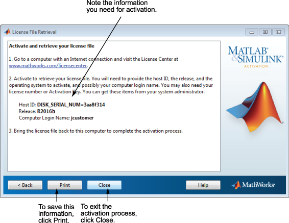

이 대화 상자에 표시된 정보를 저장해 둡니다. 인쇄를 클릭하여 이 정보의 복사본을 인쇄할 수 있습니다. 인터넷에 연결되어 있는 컴퓨터에서 이 정보를 확인하고 MathWorks® 웹 사이트의 라이선스 센터로 접속합니다. MathWorks에서는 이 정보를 사용하여 파일 설치 키와 라이선스 파일을 생성합니다. 소프트웨어를 설치하고 활성화할 컴퓨터로 돌아올 때 이러한 정보들을 가지고 있어야 합니다. 활성화 응용 프로그램을 종료하려면 마침을 클릭하십시오.
참고: 설치된 프로그램은 아직 활성화되지 않았습니다. 라이선스 파일을 가져오기 전에는 MATLAB®을 실행할 수 없습니다. |
